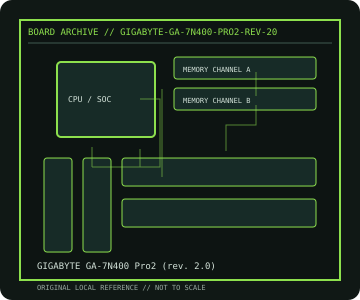

[ INDIVIDUAL COMPONENT // MOTHERBOARDS ]
GIGABYTE GA-7N400 Pro2 (rev. 2.0)
NVIDIA nForce2 Ultra 400 Socket A desktop board, 2003. This record documents the named model and its documented variants; confirm the PCB revision, submodel and firmware on the physical unit.

REVISION WARNING: Similar model names and PCB revisions may have different processors, connectors or firmware. Read the silkscreen and assembly code; use the support files for that exact board variant.
Specifications
| Catalog subcategory | AMD Socket platforms |
|---|---|
| Exact model / era | GIGABYTE GA-7N400 Pro2 (rev. 2.0) — NVIDIA nForce2 Ultra 400 Socket A desktop board, 2003 |
| CPU and socket / SoC | Socket A Athlon XP/Athlon/Duron families qualified for PCB rev. 2.0 and BIOS |
| Chipset / platform | NVIDIA nForce2 Ultra 400 SPP with MCP-T southbridge |
| Memory | Three DDR DIMM slots, dual-channel; supported capacity and FSB depend on module and CPU |
| Slots and connectivity | ATX; AGP 8x, five PCI; dual-channel IDE/ATA, SATA RAID, IEEE 1394, USB 2.0 and dual LAN on the Pro2 feature set |
| Firmware | GIGABYTE Award BIOS; download BIOS only for GA-7N400 Pro2 Rev. 2.0; do not cross-flash GA-7N400-L or other PCB spins. |
Compatibility and revision notes
The nForce2 dual-channel memory configuration and FSB need matched DIMMs/CPU. Socket A pin-grid processors and AGP cards require legacy voltage/key compatibility checks.
Socket, connector shape and family branding alone do not establish compatibility. Verify the exact processor list, minimum BIOS, memory population table, power input, dimensions, and shared-lane behavior in the cited manual before installation.
Preservation and repair
Inspect Socket A cooler-lug tabs, VRM capacitors and AGP retention. Check BIOS settings for SATA RAID before moving disks; retain original RAID metadata and connector map.
For archival preservation, photograph the PCB, labels, connectors and included accessories before cleaning. Record serial/date codes, firmware versions, known faults, prior repairs and test conditions; use ESD-safe handling and do not power a board with loose conductive hardware beneath it.
Sources & further reading
- GIGABYTE GA-7N400 Pro2 (rev. 2.0) — product/manual referenceModel-specific platform, board layout and interface reference.
- GIGABYTE GA-7N400 Pro2 (rev. 2.0) — support and firmware resourcesSupport documentation; match the PCB revision, CPU support list and firmware release to the physical board.
Manufacturer/model documentation is the primary reference. Where vendor support is archived, match its revision notes to the board and do not cross-flash firmware from a similar product.